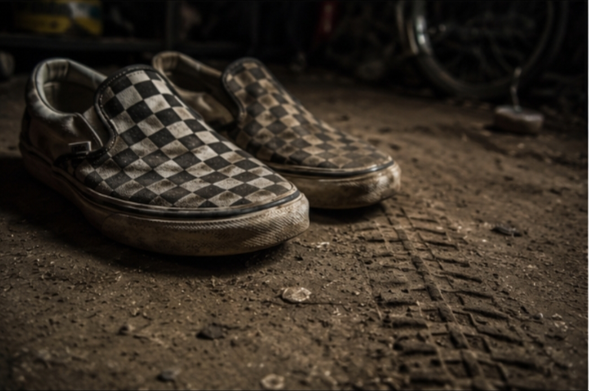
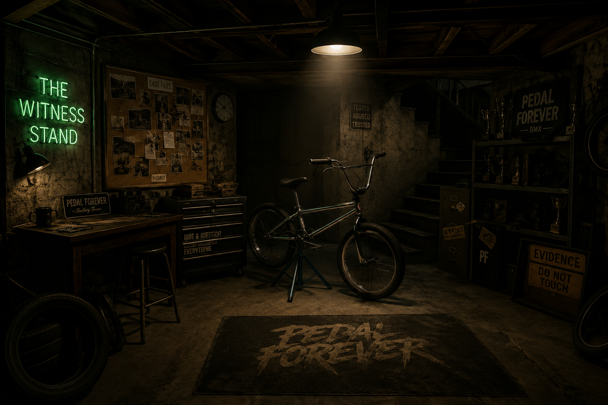
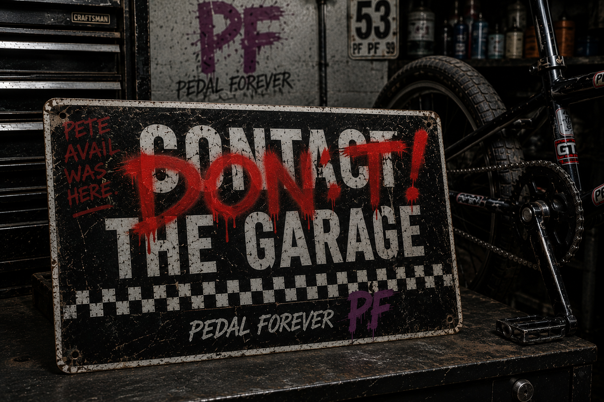

Pedal Forever
Pedal Forever is a BMX preservation and garage-culture media brand dedicated to saving forgotten machines, documenting real stories, and keeping old-school BMX history alive.

Preserve Before Replace
Some bikes should not be repainted. Some bikes should not be overbuilt. Some bikes deserve to survive exactly how they made it through time.
Pedal Forever focuses on survivor BMX bikes, original equipment, low-mile/no-mile examples, archive restorations, and preserving the identity these machines earned over decades.

THE WITNESS STAND
CASE FILE 0001 — 1995 GT Performer: Blacklight Edition
Some bikes get restored. Some bikes get remembered. The stand has seen the scratches, the swaps, the missing parts, and the stories nobody wrote down.
Bike Of The Month
Monthly archive features dedicated to survivor bikes, race bikes, basement finds, and BMX history.
OPEN FILEBMX Basement
A living archive of survivors, forgotten frames, project bikes, old parts, and New England BMX history.
ENTER BASEMENTBlack T-Shirt Movement
Limited-run black shirts, garage slogans, survivor graphics, decals, and wearable artifacts from the Pedal Forever universe.
OPEN MERCHFactory Team
Tom Cranks, Joey Topcap, and Pinchbolt Pete. Mechanically questionable and somehow still operational.
MEET THE TEAMEnter Alvern Heights
One town. 26,000 people. Endless garage stories, police runs, pizza deliveries, and hidden machines.
ENTER ALVERNVote The Next Bike Of The Month


Total Votes: 0
One Owner
One-owner bikes matter. One rider. One family. One garage. One story.
Pedal Forever documents original-owner bikes, family survivors, basement releases, estate finds, and the stories attached to them.
Pedal Forever Archive System
SURVIVOR CLASS · REVIVAL CLASS · ARCHIVE RESTORATION · IDENTITY CLASS
Some bikes remain untouched. Some deserve mechanical revival. Some deserve catalog-correct restoration. Some earn identity through period-correct stickers, scars, and rider history.

Contact The Garage
Buying, selling, preserving, documenting, and saving BMX history from New England and beyond.
Got old BMX bikes, parts, survivor stories, or hidden garage treasures?